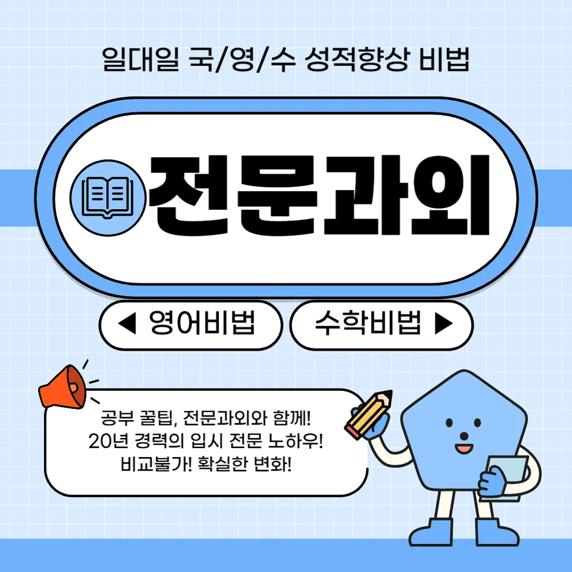

PageType : DONG
URL : /경기도과외/하남시과외/미사동과외/
지역 학습환경과 학생들의 변화
미사동과외를 시작한 학생들은 학습 공간과 동선이 달라지면서 가장 먼저 태도가 바뀌는 경우가 많습니다. 수업 전엔 숙제만 “하면 끝”이라 여기던 학생이, 수업이 진행되며 오늘의 목표를 먼저 확인하고 필요한 개념을 체크하는 방식으로 바뀝니다. 특히 미사동과외는 주변 학원가와 학교 일정의 리듬을 같이 고려해 공부 시간을 쪼개지 못하는 문제를 줄여 주는 편입니다.
지역 학습환경이 안정되면 집중이 길어지고, 그 결과로 성적이 “한 번에 점프”하기보다 “작게 꾸준히” 쌓입니다. 국어는 독해 속도가 단순 암기보다 글의 흐름을 따라가며 개선되고, 수학은 틀린 유형을 다시 풀어보는 습관이 생길 때 점수가 자주 반영됩니다. 이런 변화는 학생 본인도 체감하는데, 시험 주간이 되기 전부터 불안이 줄어드는 형태로 나타납니다.
학부모가 많이 고민하는 부분
학부모는 대개 “어떤 방식으로 지도하면 우리 아이가 실제로 따라올까”를 가장 크게 걱정합니다. 미사동과외를 문의하는 가정에서는 특히 학교 숙제와 학원 스케줄이 겹치면서 공부 계획이 무너지는 순간이 반복됩니다. 그래서 단순한 문제 풀이보다, 학부모가 확인하기 쉬운 체크 단위를 만들어 주는 것이 중요해집니다.
또 하나는 내신이 코앞으로 오기 전까지 성적이 제자리처럼 보일 때 생기는 좌절입니다. 학생이 열심히 했는데도 점수가 잘 안 오르면, 노력 자체를 의심하지 않도록 학습 과정의 기준을 조정해야 합니다. 미사동과외에서는 “오늘 무엇을 이해했는지, 무엇이 남았는지”를 말로 정리하게 하여 학부모가 흐름을 파악할 수 있게 돕습니다.
학년이 올라갈수록 달라지는 공부
초중 단계에서는 성실함이 성적으로 빠르게 연결되지만, 학년이 올라갈수록 동일한 방식이 통하지 않습니다. 중학교 이후에는 서술형과 개념 적용 비중이 커지면서, 공부습관이 바뀌지 않으면 정답률만이 아니라 풀이 과정이 흔들리기 시작합니다. 미사동과외에서는 학년 상승에 맞춰 학습 태도를 먼저 조정합니다.
예를 들어 중2 후반부터는 단원별로 “어디서 막히는지”가 분명해집니다. 이때는 문제를 더 풀게 하기보다, 같은 유형의 오답을 한 번에 정리해 다시 같은 실수가 반복되지 않게 설계하는 편이 효과가 좋습니다. 고학년으로 갈수록 자기주도학습이 필요해지는데, 이 준비가 늦어지면 시험기간에 벼락식으로 바뀌어 성적 변동이 커집니다.
학교생활과 내신 준비
학교 수업을 따라가는 것과 내신에서 점수를 얻는 것은 다릅니다. 미사동과외에서는 학교에서 배운 내용을 “시험 문장”으로 바꿔 읽는 연습을 합니다. 수업 직후의 메모가 어떤 형태로 시험 문제로 변환되는지 감을 잡게 되면, 학생이 복습을 단순 재풀이로만 하지 않고 정답 근거를 찾는 방향으로 바뀝니다.
또한 내신 준비는 시험 전 1주일에만 몰아서는 안 됩니다. 그래서 교과별로 시험 범위를 확인하는 날부터 학습 체크를 시작하고, 학교생활 중에도 공부 분위기가 무너지지 않도록 루틴을 맞춥니다. 친구들과 속도가 맞지 않아 불안해하는 학생도, 수업에서 가져온 질문을 수업 후에 정리하면서 자기 속도를 다시 세웁니다.
자기주도학습이 중요한 이유
자기주도학습은 “혼자 알아서”가 아니라, 스스로 선택하고 점검하는 능력에 가깝습니다. 미사동과외를 받는 학생 중에는 처음엔 계획을 외워 오기만 하는 경우가 있습니다. 하지만 시간이 지나면 계획을 수정하는 법을 배우고, 목표가 바뀌어도 흔들리지 않는 학습 태도를 갖추게 됩니다.
특히 시험이 가까워질수록 범위를 넓게 가져가야 하는데, 이때 자기주도학습이 약하면 “다 했는데 부족한” 상태로 끝납니다. 남은 부분을 정확히 좁히는 능력, 그리고 공부 습관을 유지하는 시간관리 역량이 필요합니다. 수업에서는 체크리스트와 마무리 정리를 반복해 학생이 스스로 다음 단계를 고르게 만듭니다.
공부 습관이 성적에 미치는 영향
같은 시간을 공부해도 결과가 다른 이유는 습관의 결이 다르기 때문입니다. 미사동과외에서는 공부습관을 성적의 단서로 봅니다. 예를 들어 숙제를 미루다가 한 번에 몰아 푸는 학생은 이해가 따라오지 않아 오답이 누적됩니다. 반대로 매일 짧게라도 복습을 넣는 학생은 같은 단원이라도 시험에서 흔들림이 줄어듭니다.
시간관리도 중요한데, 단순히 “몇 시간”이 아니라 공부의 밀도와 회복 시간을 같이 조정해야 합니다. 어떤 학생은 집중 시간이 짧아 보였지만, 수업 후 10분 정리와 20분 문제로 구성하니 이해 속도가 달라졌습니다. 결국 성적은 노력의 양보다 학습 리듬의 누적에서 생깁니다.
체크해야 할 학습 포인트
미사동과외를 통해 학습이 제대로 굴러가려면 아래 포인트가 빠지지 않아야 합니다. 학생의 실제 변화는 이런 체크에서 먼저 드러납니다.
- 시험 범위가 정해졌을 때 “오늘 할 단원”을 먼저 고르는지
- 오답을 모아 두되, 같은 실수를 반복하지 않게 재정리하는지
- 학교 수업 내용을 내신형 질문으로 바꿔 설명하려는지
- 자기주도학습 단계에서 계획을 수정하는 습관이 생겼는지
미사동과외를 선택할 때
무엇보다 중요한 기준은 학생의 상태를 진단하고, 학습 태도를 단계별로 바꾸는지 여부입니다. 단기간 점수만 기대하는 방식은 시험이 지나면 다시 흐트러질 수 있습니다. 미사동과외는 학생이 “어떻게 공부해야 하는지”를 스스로 말할 수 있게 만드는 흐름이 있어야 오래 갑니다.
또한 상담에서 학부모가 확인할 수 있는 구조가 필요합니다. 내신 준비가 어느 단계인지, 시험 주간에 무엇을 줄이고 무엇을 남겨야 하는지 같은 질문에 답이 나와야 합니다. 결국 학습은 학생이 중심이 되고, 학부모는 기준을 확인하며, 교사는 방향을 잡아주는 형태가 가장 안정적입니다.
자주 묻는 질문
Q. 미사동과외를 시작하면 첫 달에 무엇이 가장 달라지나요?
A. 보통 공부 계획을 “따라하는 수준”에서 “스스로 조정하는 수준”으로 바뀌는지부터 관찰됩니다. 학생이 공부습관을 루틴화하면서 집중 시간과 복습 방식이 같이 정리됩니다.
Q. 내신 대비는 시험기간에만 하면 안 되나요?
A. 시험기간엔 속도를 올리되, 준비는 앞당겨야 합니다. 학교생활에서 배운 내용을 시험 형태로 연결해 두면 시험이 와도 불안이 줄어듭니다.
Q. 자기주도학습이 약한 학생도 가능한가요?
A. 가능합니다. 처음부터 혼자 하게 두기보다, 체크리스트와 마무리 정리처럼 작은 선택을 반복해 자기주도학습의 기반을 만듭니다.
Q. 수학과 국어 중 무엇부터 잡는 게 효율적일까요?
A. 성적 편차가 큰 과목부터 시작하는 경우가 많지만, 실제로는 시험에서 배점과 약점이 겹치는 지점을 먼저 정리해야 합니다. 오답 유형이 많은 과목이 우선순위가 되기 쉽습니다.
Q. 학부모가 집에서 도와줘야 할 역할이 따로 있나요?
A. 문제를 풀어주는 것보다, 학습 체크가 돌아가는지 확인하는 편이 효과적입니다. 학생이 오늘 무엇을 이해했는지, 다음에 무엇을 할지 말할 수 있게만 도와도 충분히 도움이 됩니다.
